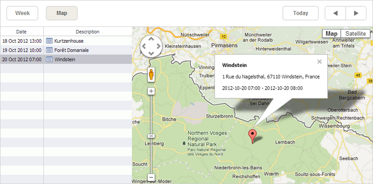

The Map view presents a list of upcoming events and Google Maps to show or edit the event's location or to set the location for new events.

By default, the left list of the view displays events beginning from the current date. To change such behavior, use the map_start, map_end properties.
To use Google Maps, you need to add your own google API key on your page.
To add the Map view to the scheduler, follow these steps:
1. Include the Map view and Google Maps code files on the page:
<-- use your own Google API key-->
<script src="//maps.google.com/maps/api/js?key=[your Google API key]&sensor=false"
type="text/javascript"></script>`
<script src="../codebase/ext/dhtmlxscheduler_map_view.js"></script>
2. Add the view's tab to the scheduler's markup:
<div id="scheduler_here" class="dhx_cal_container" ...>
<div class="dhx_cal_navline">
...
<div class="dhx_cal_tab" name="map_tab" style="right:280px;"></div>
</div>
...
</div>
3. Set the label for the tab:
//'map_tab' is the name of our div
scheduler.locale.labels.map_tab = "Map";
4. Define an additional section in the lightbox to manage the event location:
scheduler.config.lightbox.sections=[
{name:"description", height:50,map_to:"text", type:"textarea", focus:true},
{name:"location", height:43, map_to:"event_location", type:"textarea"},
{name:"time", height:72, type:"time", map_to:"auto"}
]
5. Set the label for the section:
scheduler.locale.labels.section_location = "Location";
6. Initialize the scheduler:
//'map' is the default name of the Map view
scheduler.init('scheduler_here',new Date(2019,8,1),"map");
To be correctly rendered on the Map view, data items must contain a number of additional properties. The final list of mandatory properties (that data items should have) looks as in:
Make sure that your .php file conforms to your database data.
The Map view has 4 labels defined in the locale:
The 2 first labels are commonly specified, while adding the view tab to the scheduler, but the remaining marker labels should be redefined, only if you localize the application to a language, different from English.
scheduler.xy.map_date_width - the width of the date column
scheduler.xy.map_description_width - the width of the description column